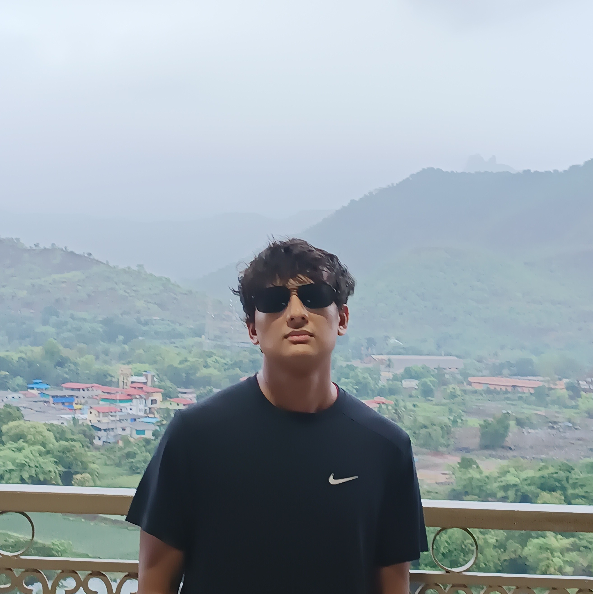

Rahul Chand
Hi 🫡 I'm Rahul. I completed my undergrad in Computer Science from BITS Pilani in 2019 & recently worked at Microsoft Research India in the Extreme Classification Team.
Scroll below for resume, contact info & blog :)
Contact: chandrahul0320[at]gmail[.]com